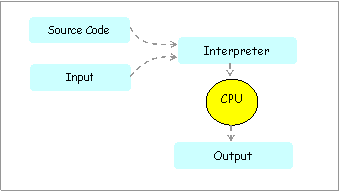
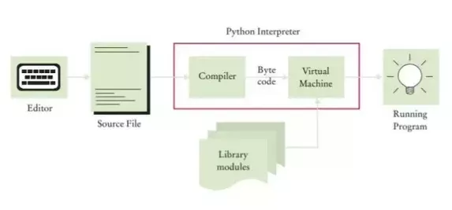

Introduzione a Python
Python è un linguaggio di programmazione moderno, con una sintassi volutamente semplice e facile da imparare, utilizzabile in vari contesti anche molto diversi fra loro:
- sviluppo di applicazioni desktop,
- generazione siti e applicazioni Web,
- scripting per l'amministrazione di sistema,
- calcolo scientifico e numerico,
- gestione database,
- giochi,
- grafica 3D,
- etc...
Se controllate sul sito di riferimento potrete trovare una sezione quotes con le citazioni famose su Python da parte di personaggi famosi delle aziende più in vista e una sezione Success Stories che appunto elenca le maggiori storie di successo ove Python ha contribuito in maniera determinante.
Python è un linguaggio ideato da Guido van Rossum all'inizio degli anni novanta. Il nome fu scelto (tenetevi alla sedia) per via della sua passione per i Monty Python, un gruppo comico britannico attivo negli anni settanta. Per rendervi conto della incredibile comicità del gruppo... ecco uno dei primi video su YouTube ottenuto cercando Monty Python ita. Dura 84 minuti. Noi non supereremo il minuto 4...
Breve Storia
Come già citato, Python nasce negli anni novanta, grazie al suo Benevolent Dictator For Life Guido van Rossum. La storia racconta che durante le vacanze di Natale del 1989, Guido progettò questo nuovo linguaggio, cercando di mettere in esso tutte le caratteristiche positive che aveva trovato negli altri linguaggi di programmazione, provando ad evitare forzature o strutture non lineari.
Subito Python diventa uno strumento imprescindibile per l'azienda in cui Guido lavora. Questo fatto e la licenza opensource con cui van Rossum distribuisce la sua creatura determinano la sua fortuna: Python diventa brevemente uno dei linguaggi più utilizzati e seguiti da una comunità attiva di sviluppatori.
Python ha avuto il suo momento di massima espansione con la versione 2.x del linguaggio, rilasciata nel 2000, momento in cui è passato da "linguaggio di programmazione settoriale" a "linguaggio tra i più utilizzati e conosciuti".
Pochi anni dopo, ci si rende conto che per fare un passo definitivo, il linguaggio deve essere sistemato per funzionare bene in tutte le lingue (e in tutti i set di caratteri), avere una sintassi consistente e facile da dedurre e indovinare ed essere facile da potenziare tramite librerie di supporto.
Nel 2008 nasce Python 3.0.
Il tempo ha fatto il resto... la versione 2.x di Python ha fatto la storia, ma ormai deve anche rimanerci... Python 3.x è attualmente il presente di uno dei migliori linguaggi di programmazione della seppur breve storia dell'Informatica.
Linguaggi compilati vs interpretati
Prima di passare all'installare vera e propria dell'interprete e dell'ambiente di sviluppo Python, concediamoci una breve introduzione generica e generale sui linguaggi di programmazione.
Suggerimento
Le cose che spiego in questo capitolo non sono banali per chi non ha (ancora) mai programmato con alcun linguaggio.
Sentitevi liberi di leggere velocemente questa parte, ma ricordatevi di riguardare queste righe almeno una volta all'anno, per meglio apprezzare il livello di comprensione del linguaggio che avete raggiunto!
I linguaggi di programmazione si dividono in:
- linguaggi compilati
- linguaggi interpretati
Vi dico subito che Python è un linguaggio interpretato. Nelle prossime righe cercheremo di capire cosa questo significhi e quale differenza faccia con i linguaggi compilati.
Nei linguaggi compilati si scrive il codice sorgente, un file di testo semplice, nel linguaggio proprio (ad esempio nel linguaggio C, che è un linguaggio compilato). Quando si è pronti con il codice si passa alla compilazione. Banalmente ogni linguaggio compilato è fornito di un compilatore, che è in grado di tradurre il codice dal linguaggio di partenza al linguaggio macchina, creando un file eseguibile ovvero un file contenente una sequenza di istruzioni direttamente eseguibili dalla macchina (in linguaggio macchina appunto).

Creato l'eseguibile, il compilatore non serve più. Possiamo eseguire il nostro programma semplicemente invocando l'eseguibile.
Nei linguaggi interpretati si scrive il codice sorgente, sempre un file di testo semplice, nel linguaggio proprio (ad esempio nel linguaggio Python). Quando si è pronti con il codice, la preparazione del programma è terminata. Quando si vuole eseguire il programma si invoca l'interprete, che legge il codice del programma e sa esattamente eseguire ogni istruzione scritta, in modo tale da interpretare il programma da eseguire.

Ogni volta che si vuole rieseguire il programma, riparte l'interpretazione del codice.
Questa importante caratteristica porta inevitabilmente importanti differenze insite nei linguaggi. Ne elenco alcune:
- in fase di esecuzione, i programmi generati da linguaggi compilati sono generalmente più veloci. Infatti eseguono direttamente codice nativo (pronto per essere eseguito dal compilatore) invece di doverlo interpretare al volo;
- in fase di produzione, i programmi interpretati sono subito pronti per l'interpretazione e il testing, senza dover ad ogni minima modifica ricompilare.
- in fase di esecuzione, i programmi generati da linguaggi compilati utilizzano meno memoria. Infatti per eseguire un programma generato da compilazione serve solo il programma stesso, mentre per eseguire un programma interpretato serve il programma e l'interprete;
- in fase di esecuzione, i programmi interpretati gestiscono la memoria in maniera più semplice e (spesso) efficiente perché l'interprete si occupa di filtrare le (sciocchezze) richieste del programma.
- per ogni sistema operativo supportato è necessario procedere ad una ricompilazione del codice sorgente. Infatti gli eseguibili generati dalla compilazione dipendono dal sistema operativo ove essi sono compilati;
- il codice di un programma interpretato va bene così com'è per ogni sistema operativo per cui esiste un interprete del linguaggio;
- i programmi compilati vengono eseguiti direttamente dal dispositivo ospite e quindi possono fare grandi danni
- i programmi interpretati vengono eseguiti tramite l'interprete del linguaggio che può controllare che essi non facciano danni all'hardware o alla memoria del dispositivo.
Insomma, come si vede, ci sono luci e ombre in entrambi gli approcci. Di certo l'approccio dei linguaggi interpretati è quello più semplice e sicuro.
Python, per massimizzare i punti a favore e ottenere il miglior comportamento possibile, può utilizzare un approccio misto, sbilanciato dalla parte dell'interpretazione:
Note
L'interprete Python, alla prima esecuzione del codice, fa una sorta di compilazione, generando un programma (bytecode, estensione .pyc) non direttamente eseguibile dal dispositivo, ma direttamente eseguibile dalla parte dell'interprete preposta allo scopo: la macchina virtuale.
In questo modo, dalla seconda esecuzione in poi, la velocità della stessa sarà paragonabile (in molti casi identica) a quella dei linguaggi compilati.

Tutto il processo descritto è completamente automatico: il programmatore non deve far altro che scrivere codice e testarne l'esecuzione nell'ambiente adatto.